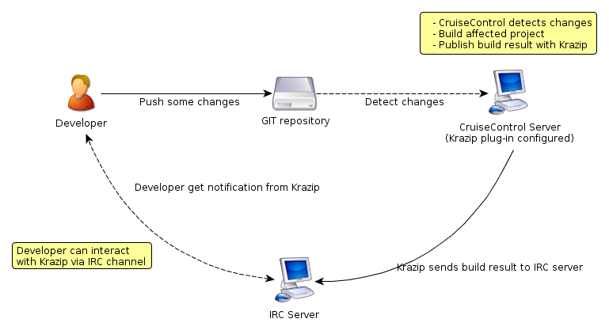

Pongvech Vechprasit
pun@abctech-thailand.com
Agenda
- Krazip Overview
- Krazip Installation/Configuration on CruiseControl
- Krazip Usage Demonstration
- Krazip Architecture/Design
Krazip Overview
-

Krazip Installation
- First, of course, you need a CruiseControl
- Get CruiseControl binary distribution version 2.8.4
- Download and install it
- Make sure everything is work, and then go to next step
Krazip Installation (cont.)
- Install Krazip on CruiseControl is very simple...
- You need Krazip library (krazip{version}.jar)
- Next you just go to where you installed CruiseControl and enter "lib" folder
- Add Krazip library to "lib" folder
- And you are done!(Now you need to configure it...
Krazip Configuration (config.xml)
- Register Krazip (right after <cruisecontrol>)
<plugin name="krazip" classname="net.sourceforge.cruisecontrol.publishers.KrazipIRCPublisher"/>
<publishers>
<krazip
host="irc.linpro.no"
port="6667"
channel="#krazip"
resulturl="http://localhost:8080/cruisecontrol/buildresults/${project.name}" />
logginglevel="pass"
nickName="krazip"
</publishers>
| Attribute | Description | Note |
| nickName | Nick to use on the irc server | *Optional* Defaults to "krazip" |
| host | URL for IRC server | *Required* |
| port | IRC port | *Optional* Default to 6667 |
| channel | IRC channel for Krazip to publish | *Required* |
| resulturl | An URL for log file | *Optional* (Set this if you want to append a link to build log when build fail) |
| logginglevel | Logging level for Krazip | *Optional* Can be "Pass", "Fail" or "off". Default is "Pass" |